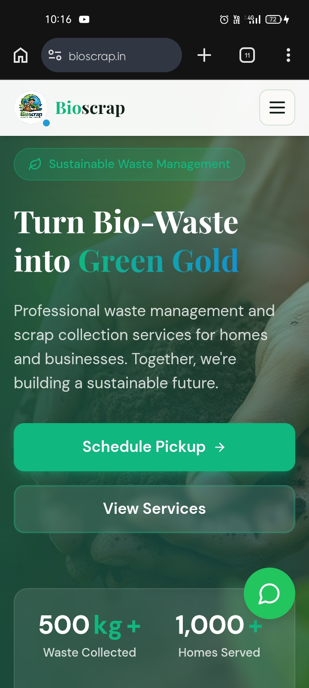
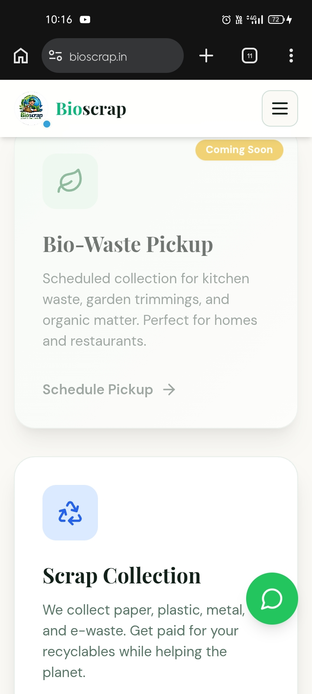
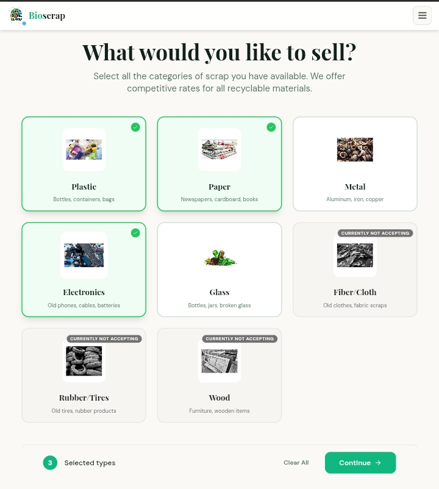
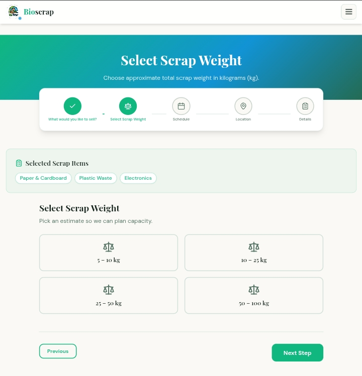
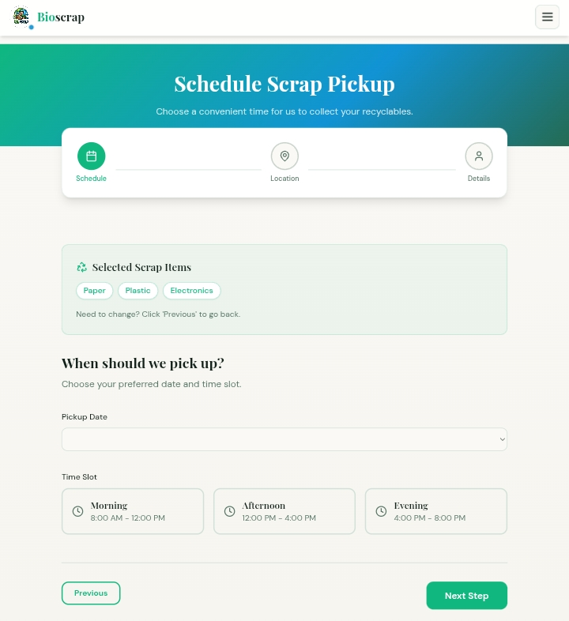
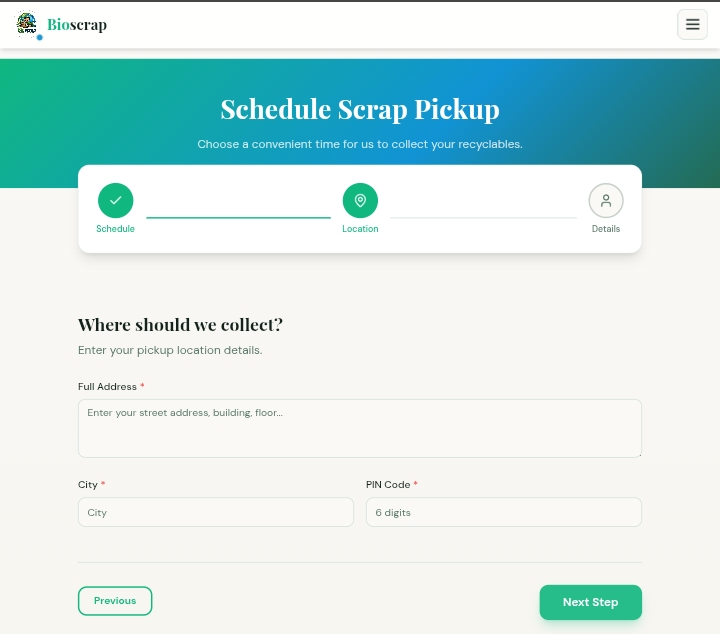
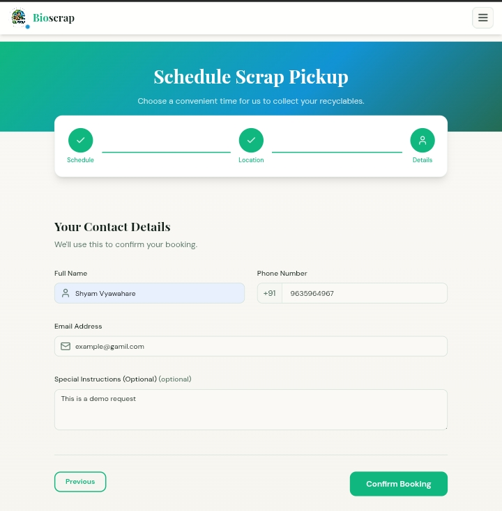
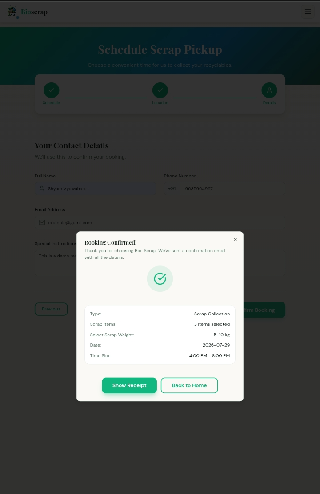
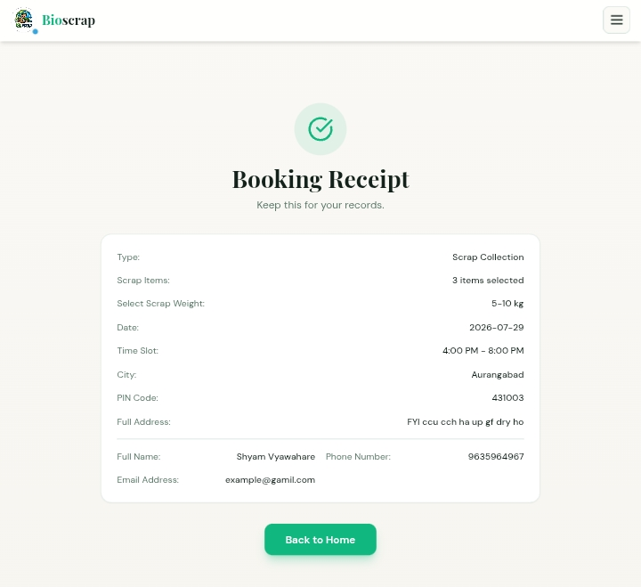
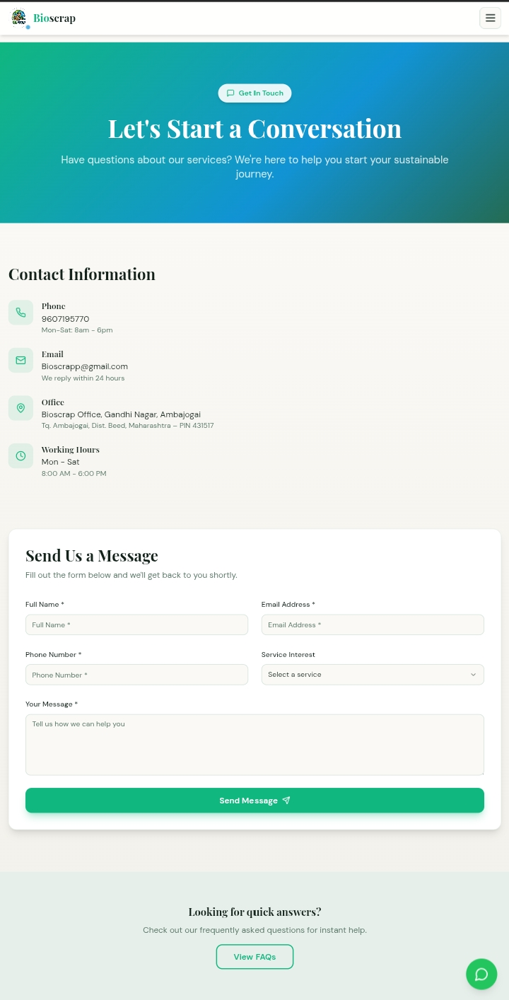

BioScrap.in is a smart waste and scrap management platform designed to streamline the process of collecting, managing, and recycling recyclable materials through a digital ecosystem. The platform connects users with scrap collection services while promoting sustainability, efficient waste segregation, and eco-friendly disposal practices. The system focuses on improving waste management workflows using automation, user-friendly interfaces, and scalable backend architecture suitable for local scrap vendors, recycling agencies, and consumers.
HTML, CSS, JavaScript, TypeScript
Python, Flask
MySQL, Google Sheets Connection
Implemented a structured categorization system for multiple waste types to simplify collection workflows and improve recycling efficiency.
Designed a clean and intuitive interface to ensure seamless navigation for users requesting scrap pickups and tracking service status.
Developed modular backend routes and database structures capable of handling multiple users and collection requests efficiently.
BioScrap.in promotes sustainable waste management practices by digitizing scrap collection processes and encouraging responsible recycling habits. The platform aims to bridge the gap between consumers and recycling services while contributing toward cleaner and smarter urban waste management solutions.

BioScrap Homescreen

BioScrap pickup type selection

Pickup process - Selecting scrap type

Pickup process - Selecting scrap weight

Scheduling pickup

Scheduling pickup

User information fill up

Confirmed pickup order

Pickup order receipt

Contact section
 View project on GitHub
View project on GitHub